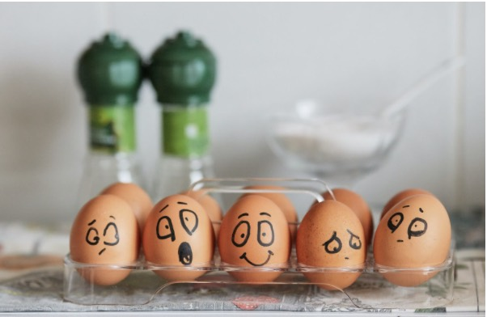

Самооценка и самопринятие SelfЭмоциональное выгорание – стадии и симптомы, методы восстановления и профилактики
Изначально термин «эмоциональное профессиональное выгорание» относился...

Самооценка и самопринятие SelfИзначально термин «эмоциональное профессиональное выгорание» относился...
Один из самых важных навыков, которые может дать работа с психотерапевтом, – умение в разных ситуациях по-разному обходиться...
Изначально термин «эмоциональное профессиональное выгорание» относился...
Один из самых важных навыков, которые может дать работа с психотерапевтом, – умение в разных ситуациях...
Клиенты часто спрашивают, как КОНТРОЛИРОВАТЬ свои негативные эмоции. Пришло время об этом написать!
Изначально термин «эмоциональное ...
Один из самых важных навыков, которые может дать работа с психотерапевтом, – умение ...
Клиенты часто спрашивают, как КОНТРОЛИРОВАТЬ свои негативные эмоции. Пришло время об этом написать!